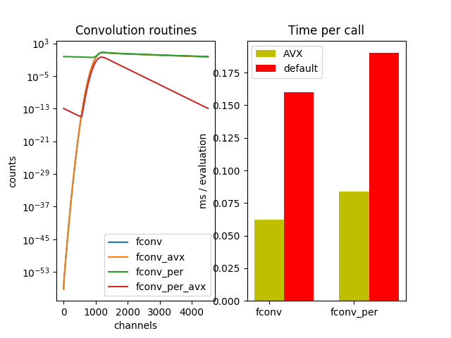

Note
Click here to download the full example code
Convolution benchmark¶

from __future__ import annotations
import fit2x
import scipy.stats
import time
import numpy as np
import pylab as p
def model_irf(
n_channels,
period,
irf_position,
irf_width
):
time_axis = np.linspace(0, period, n_channels)
irf_np = scipy.stats.norm.pdf(
time_axis, loc=irf_position,
scale=irf_width)
return irf_np, time_axis
period = 16
irf, time_axis = model_irf(
n_channels=4505,
period=period,
irf_position=4.0,
irf_width=0.25
)
dt = time_axis[1]-time_axis[0]
lifetime_spectrum = np.array([1., 10] + ([1., 4, 1., 0.4] * 4))
model = np.zeros_like(irf)
stop = len(irf)
start = 0
n_runs = 50
# benchmark
################
times = list()
times_avx = list()
names = ["fconv", "fconv_per"]
t_start = time.perf_counter()
for _ in range(n_runs):
fit2x.fconv(fit=model, irf=irf, x=lifetime_spectrum, start=start, stop=stop, dt=dt)
ex = time.perf_counter() - t_start
times.append(ex)
t_start = time.perf_counter()
for _ in range(n_runs):
fit2x.fconv_avx(fit=model, irf=irf, x=lifetime_spectrum, start=start, stop=stop, dt=dt)
ex = time.perf_counter() - t_start
times_avx.append(ex)
t_start = time.perf_counter() # in seconds
for _ in range(n_runs):
fit2x.fconv_per(fit=model, irf=irf, x=lifetime_spectrum, period=period, start=start, stop=stop, dt=dt)
ex = time.perf_counter() - t_start
times.append(ex)
t_start = time.perf_counter()
for _ in range(n_runs):
fit2x.fconv_per_avx(fit=model, irf=irf, x=lifetime_spectrum, period=period, start=start, stop=stop, dt=dt)
ex = time.perf_counter() - t_start
times_avx.append(ex)
times = np.array(times) * 1000.0 / n_runs
times_avx = np.array(times_avx) * 1000.0 / n_runs
# make plots
##################
fig, ax = p.subplots(nrows=1, ncols=2, sharex=False)
ax[0].set_title('Convolution routines')
ax[0].set_ylabel('counts')
ax[0].set_xlabel('channels')
model = np.zeros_like(irf)
fit2x.fconv(fit=model, irf=irf, x=lifetime_spectrum, start=start, stop=stop, dt=dt)
ax[0].semilogy(model, label="fconv")
model_avx = np.zeros_like(irf)
fit2x.fconv_avx(fit=model_avx, irf=irf, x=lifetime_spectrum, start=start, stop=stop, dt=dt)
ax[0].semilogy(model, label="fconv_avx")
model = np.zeros_like(irf)
fit2x.fconv_per(fit=model, irf=irf, x=lifetime_spectrum, period=period, start=start, stop=stop, dt=dt)
ax[0].semilogy(model, label="fconv_per")
model = np.zeros_like(irf)
fit2x.fconv_per_avx(fit=model, irf=irf, x=lifetime_spectrum, period=period, start=start, stop=stop, dt=dt)
ax[0].semilogy(model, label="fconv_per_avx")
ax[0].legend()
# Benchmark
ax[1].set_title('Benchmark')
ax[1].set_ylabel('ms / evaluation')
ind = np.arange(len(times)) # the x locations for the groups
ax[1].set_title('Time per call')
ax[1].set_xticks(ind)
ax[1].set_xticklabels(names)
width = 0.35
ax[1].bar(ind, times_avx, width, color='y', label='AVX')
ax[1].bar(ind + width, times, width, color='r', label='default')
ax[1].legend()
p.show()
Total running time of the script: ( 0 minutes 0.267 seconds)